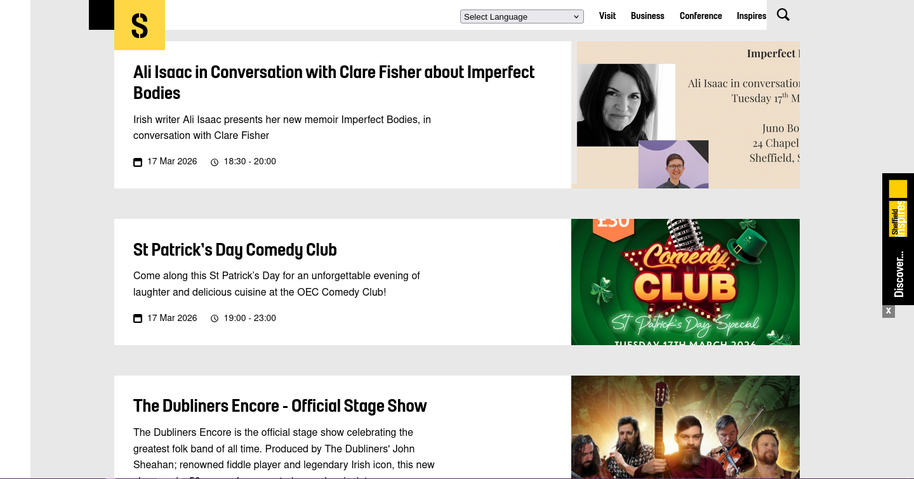
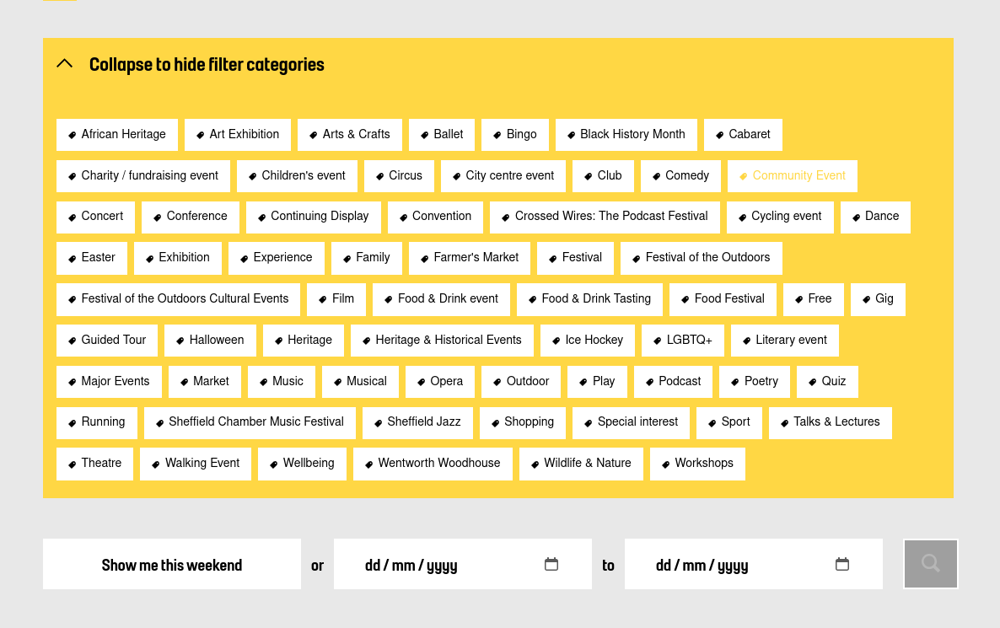
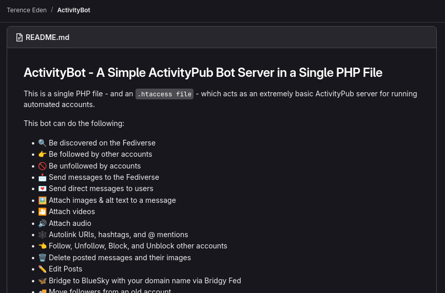
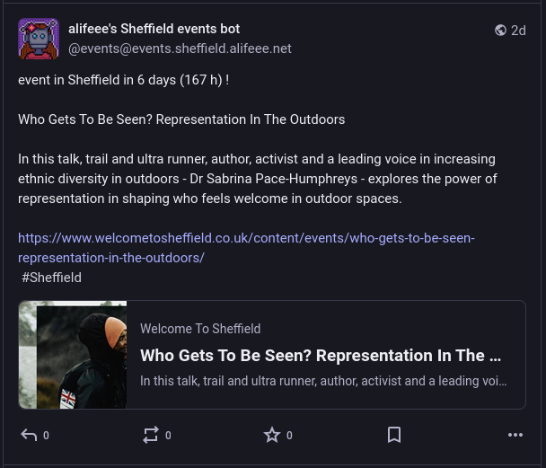
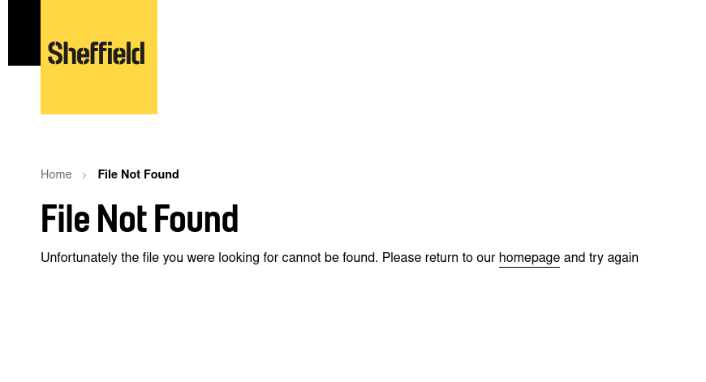

no metadata to [make a calendar] / [make a collage of events images] / [keep track on exhibitions at the kelham island museum] / [make a plaintext search]
URL="https://welcometosheffield.co.uk/visit/whats-on/all-events/"
curl -sL "${URL}?page=${page}"
echo $html | hxselect "div.search-result"
for event in $events; do
name=$(echo "${event}" | hxselect -c "div h3 a")
link=$(echo "${event}" | hxselect -c "div h3 a::attr(href)")
…
jq -n '{
"name": $ARGS.positional[0],
"link": ($ARGS.positional[1]),
…
}' \
--args "${name}" "${link}" …
done
echo "${json}" | php -r 'echo html_entity_decode(STDIN);'
{
"name": "Feeling Fabulous Queer Dance Workshops",
"link": "https://www.welcometosheffield.co.uk/
content/events/feeling-fabulous-queer-
dance-workshops/",
"description": "Queer dance and movement workshops
for all abilities from Ghetto Fabulous
and Andro & Eve",
"datetime": "17 Mar 2026 - 31 Mar 2026",
"start_date": "17 Mar 2026",
"end_date": "31 Mar 2026",
"start_date_unix": "1773705600",
"end_date_unix": "1774911600"
}
<?xml version='1.0' encoding='UTF-8'?>
<feed xmlns="http://www.w3.org/2005/Atom">
<title>Sheffield events</title>
<updated>2026-03-17T23:11:30Z</updated>
<entry>
<title>Feeling Fabulous Queer Dance Workshops</title>
<link href="https://www.welcometosheffield.co.uk/
content/events/feeling-fabulous-queer-dance-
workshops/" />
<updated>2026-03-17T00:00:00Z</updated>
<summary>
Queer dance and movement workshops for all
abilities from Ghetto Fabulous and Andro & Eve
</summary>
</entry>
</feed>
simple CGI
https://server.alifeee.net/sheffield/events/ActivityPub

$username = "events";
$password = "289h7fh897a23h87u9fh23a";
switch ( $path ) {
case ".well-known/webfinger":
webfinger();
case "@" . $username:
username();
case "inbox":
inbox();
case "action/send":
send();
…
}
function inbox() {…}
function username() {…}
…
name=$(echo $event | jq .name)
liṅk=$(echo $event | jq .liṅk)
description=$(echo $event | jq .description)
message='event in Sheffield!
$name
$link
$description'
echo $message \
| curl -i -X POST -F "password=${PASSWORD}" \
"https://events.sheffield.alifeee.net/action/send"

https://gitlab.com/edent/activity-bot/ — https://events.sheffield.alifeee.net/
# get latest sheffield events
0 4 * * * ./get_all.sh
5 4 * * * python feed.py > cgi/feed.xml
# post sheffield events to Mastodon bot
*/15 * * * * ./check_posts.sh
17 Mar 2026 19:00 - 23:00
14 Mar 2026 - 04 Apr 2026
25 Apr 2026 12:00 - 17:00
25 Apr 2026 15:00
09 Apr 2026 10:00 & 13:30
28 May 2026 11:00 / 14:30
28 May 2026 10:00 & 13:30
14 Mar 2026 13"00

- /visit/what-s-on/all-events/
+ /visit/whats-on/all-events/
# get final page
- hxselect "a[data-pagenumber]:nth-last-child(2) span"
+ hxselect ".paginationV2 a::attr(href)" | sort -n
…
# get tags
- hxselect "div.tags small"
annoying bits: they change the URL (with no redirect); they change the page structure (change CSS query); they internalise data (tags no longer scrapable)